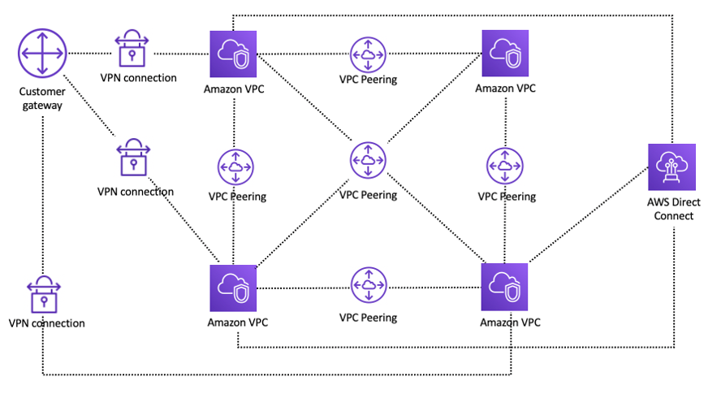

Redes e VPC na AWS
Na AWS, quando falamos de redes, quase sempre estamos nos referindo à Amazon VPC (Virtual Private Cloud). É como se fosse uma rede privada virtual que você cria dentro da nuvem da AWS, para organizar e isolar seus recursos (EC2, RDS, Lambda, etc.).
O que é VPC?
A Amazon VPC é um ambiente de rede virtual dedicado à sua conta AWS. Funciona como se fosse a rede de uma empresa tradicional, mas dentro da nuvem. Você controla faixas de IP, sub-redes, roteamento, segurança e conectividade.
Principais Componentes de uma VPC
- CIDR Block (faixa de IPs) – Define o intervalo de endereços IP. Exemplo: 10.0.0.0/16.
- Subnets (sub-redes) – Dividem a VPC em partes menores.
Públicas: acessíveis pela internet (ex.: servidores web).
Privadas: sem acesso direto da internet (ex.: bancos de dados). - Route Tables – Definem para onde o tráfego de rede deve ir.
- Internet Gateway (IGW) – Permite que sub-redes públicas se comuniquem com a internet.
- NAT Gateway – Permite que instâncias privadas acessem a internet sem serem expostas.
- Security Groups (SGs) – Firewall em nível de instância.
- Network ACLs (NACLs) – Firewall em nível de sub-rede.
- VPC Peering – Conecta duas VPCs diferentes.
- Transit Gateway – Conecta múltiplas VPCs e redes locais.
- VPN e Direct Connect – Conexões seguras entre VPC e rede local.
Exemplo prático
Uma arquitetura comum seria:
- VPC: 10.0.0.0/16
- Subnet pública: 10.0.1.0/24 → para servidores web.
- Subnet privada: 10.0.2.0/24 → para bancos de dados.
- NAT Gateway → permite que o banco de dados baixe atualizações sem ser acessível da internet.
- Security Groups → controlam quem pode se comunicar com cada recurso.

Em resumo, a VPC é o coração da rede na AWS, garantindo segurança, isolamento e controle da sua arquitetura na nuvem.
